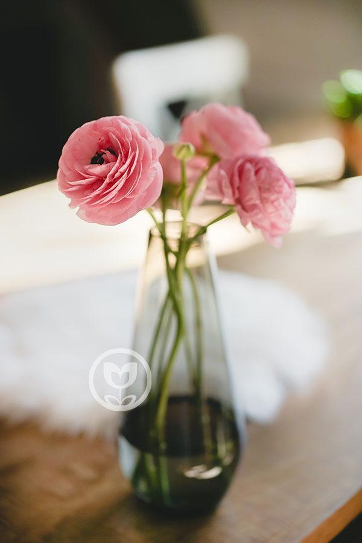
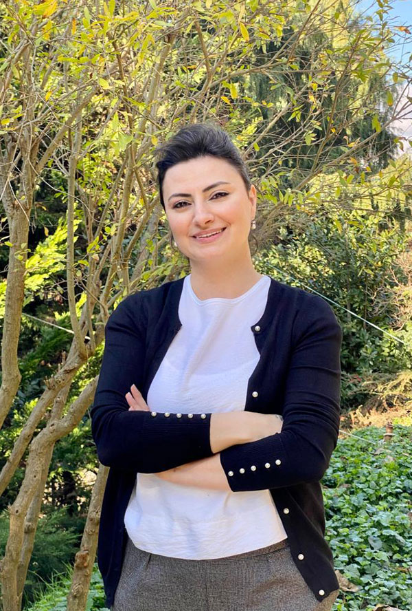
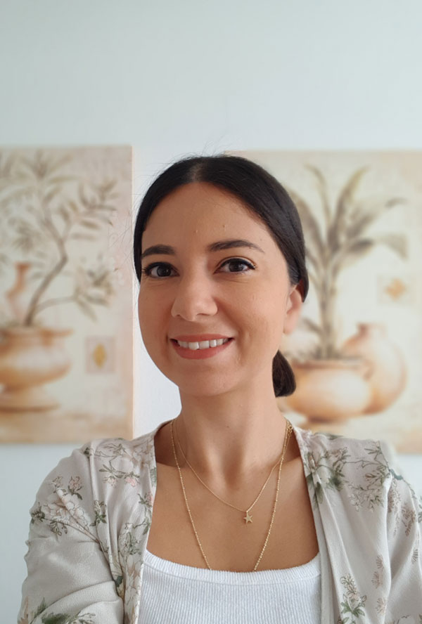
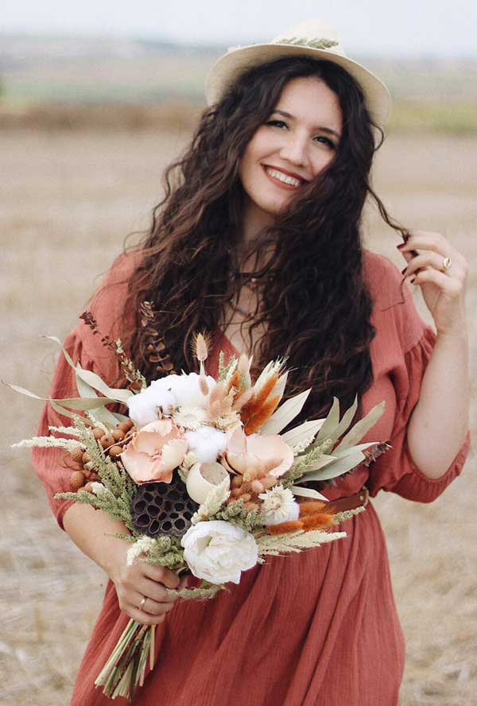
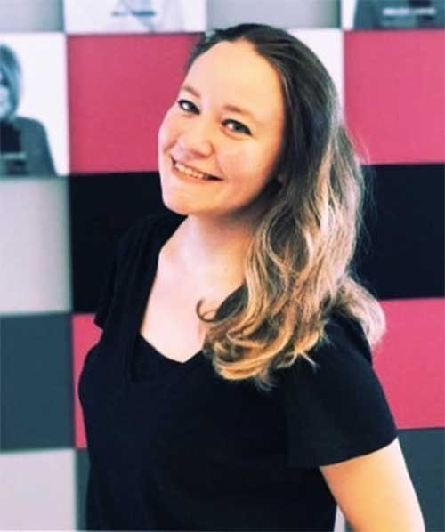
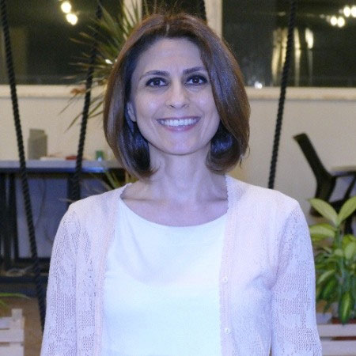
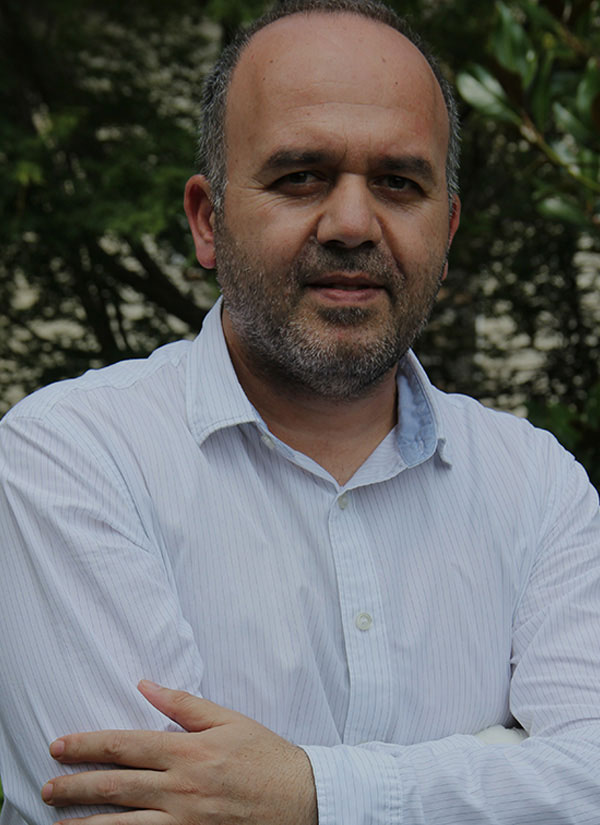

Hakkımızda7 kişilik ekip
Bitkiler başrolde, katılımcı yönetmen.
Kurum organizasyonel gelişimi ve çalışan gelişimi kapsamında, alternatif gelişim ve pekiştirmenin gerekli olduğu durumlarda gelişim atölyeleri düzenliyoruz.
Kurum organizasyonel gelişimi, çalışan gelişimi kapsamında alternatif gelişim ve pekiştirmenin gerekli olduğu durumlarda bitkilerin, çiçeklerin başrolde; katılımcının yönetmen olduğu gelişim atölyeleri düzenliyoruz.
Kurum kültürü ve çalışan yetkinlik gelişimi kapsamında konu dahilinde konsept geliştirerek koçluk yaklaşımıyla doğa temalı olarak gerçekleştirdiğimiz atölyelere “Doğadan Gelişim Atölyeleri”, doğa temasını koruduğumuz, yaratıcılığa ve keyifli vakit geçirtmeye odaklandığımız atölyelere “Doğadan Hobi Atölyeleri” diyoruz.
Doğa temasını koruyarak; bitkilerle, çiçeklerle tasarladığımız tasarım ürünlerini “Afloday Doğadan Tasarım Mağazası” ile doğa aşıklarıyla buluşturuyoruz. Tasarım ürünlerimizi online mağazalarımızdan ve Etiler’deki tasarım atölyemizde bulabilir, sipariş verebilirsiniz.



Ekip · 7 kişi
Ekibimiz
Kurumsal iletişim, insan kaynakları, koçluk ve tasarım geçmişinden gelen bir ekip.

EkipProfil →
Ceylan Kalyon
Atölye Eğitmeni - Koç - Tasarımcı
Kariyer yolculuğu; kurumsal iletişim, iç iletişim, marka iletişimi, medya ilişkileri, dergi editörlüğü, sosyal medya yönetimi ile iletişim çerçevesinde süregeldi.

EkipProfil →
Tuğçe Hazinedar
Atölye Eğitmeni - Tasarımcı
Çocukluğundan beri, botanik bilimleri, doğa ve çiçeklerle yakından ilgili olan Tuğçe; bulduğu her fırsatta doğaya, çiçeklere yakınlaşma çabası içinde oldu.

EkipProfil →
Derya Akyazıcı Kalyon
Atölye Eğitmeni – Çocuk Atölyeleri Danışmanı
Erken yaşta çocukluk dönemi uzmanlığına sahip olan danışmanımız okul öncesi eğitmeni olarak uzun yıllar görev yaparak bir çok çocuğun zihnen ve fiziken sağlıkla gelişmesi için öncülük etmiştir.

EkipProfil →
Elif Çelikkol Duman
Atölye Eğitmeni – Tasarımcı
1989 yılının ılık bir ilkbahar öğleden sonrasında İstanbul’da güzel bir bahçede dünyaya gelmiştir.

EkipProfil →
Alara Apaydın Saruhan
Atölye Eğitmeni
Kariyer yolculuğuna uluslararası kurumların iletişim departmanlarında başlayan Alara, 10 yılı aşkın süre uluslararası firmalarda birçok farklı sektörde İç İletişim, Marka İletişimi, Kurumsal İletişim, Çalışan Markası Yaratma, Sosyal Medya Yönetimi alanlarında görev yaparak deneyim kazanmıştır.

EkipProfil →
Zeynep Altunhan
Eğitmen
Kariyer yolculuğunda ağırlıklı olarak perakende sektöründe insan kaynakları yöneticisi olarak görev alan Zeynep; şirket birleşmeleri ve satın almalar, şirketlerin büyümesi ve küçülmesi süreçlerinde aktif görev alma, bölge müdürlükleri açma, start-up girişimlere destek verme gibi pek çok farklı süreçte önemli deneyimler edindi.

EkipProfil →
Muharrem Özdemir
Kurumsal Eğitim Danışmanı
Kariyerine Doğuş Grubu’nda Satış Yöneticisi olarak başladı. Sonrasında Nestle Türkiye ve Marsa Kraft’da FMCG sektöründe satış ve yöneticilik pozisyonlarında görev aldı. Bu süre içerisinde Türkiye’nin birçok ilinin ticari yapısını gözlemleme şansını elde etti. Bu süre zarfında hem geleneksel hem de modern satış kanallarında görev aldı.